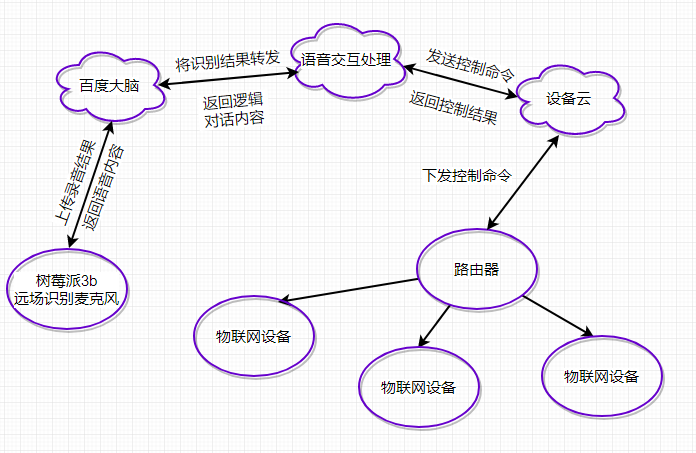

第六章 语音交互及兼容框架设计
第六章 语音交互及兼容框架设计
6.1 语音交互框架设计
语音交互控制一直是这两年智能家居行业的热点话题，传统的物联网控制方式以满足不了人们的生活需求，融入人工智能的语音交互技术恰恰是新型控制方式的主导，语音交互控制的优点在于用户可以摆脱手机、遥控、电脑等移动终端，直接通过对话的方式控制物联网智能家居设备。目前语音交互的核心技术掌握大公司手里，语音交互的推广，恰好可以缓解当前智能家居行业设备厂商APP五花八门，用户体验差的局面。本设计也是依附于大公司语音识别引擎，进而与上述搭建完成后端服务器对接，使硬件设备兼容语音控制的功能。

设计所用的语音识别硬件终端为：树莓派3b，远场设别麦克风整列。树莓派3b主要是提供一个稳定、便携的linux平台，用来运行百度dueros语音交互系统。远场识别麦克风整列主要功能是对场景进行录音，并将录音进行降噪处理后，传给树莓派3b，承担着拾音、处理等任务。
语音交互控制的框架运行流程：远场麦克风整列对环境进行录音，将录音内容经过算法降噪处理后传输给树莓派，树莓派对降噪后的录音内容进行分段处理后，转化成“百度大脑”所需要的格式，打包上传给“百度大脑”，“百度大脑”进行分析识别录音结果，将识别结果转发给用户用于处理语音交互逻辑的服务器，接着逻辑服务器向设备云发送控制指令，设备云接收到控制指令后，按硬件设备通信协议格式进行转化，然后下发给硬件设备。控制指令执行成功后，设备云返回逻辑服务器控制结果，逻辑服务器按照返回的控制结果，返回给百度大脑对应的逻辑对话内容，百度大脑将需要合成的语音内容返回给树莓派系统，树莓派接收后进行进一步处理，最后控制扬声器播放。
本博客所有文章除特别声明外，均采用 CC BY-NC-SA 4.0 许可协议。转载请注明来自 Mr.chen Blog！
相关推荐


评论